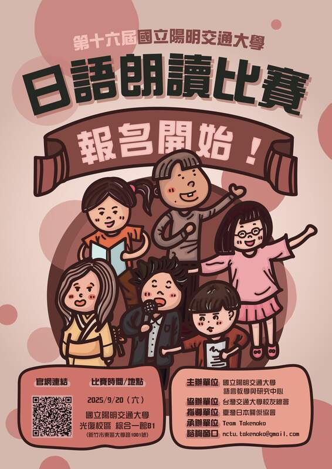

<section class="section" style="border-bottom:none;">
	<div class="container">
		<div class="section-head">
			<span class="eyebrow">Reading Contest 2025</span>
			<h2>第16屆日語朗讀比賽獲獎名單</h2>
			<p>2025.9.20（六）｜國立陽明交通大學光復校區綜合一館 B1 教室 AB103</p>
		</div>

		<div class="notice">
			<p>分組名單已公布，如果參賽者發現找不到自己的名字，請務必通知。取消報名請於 <strong>9/12 前</strong>寄信至 <a href="mailto:nctu.takenoko@gmail.com">nctu.takenoko@gmail.com</a>。</p>
			<p>參賽證明及活動照片皆已上傳，請有需要的參賽選手自行列印或下載呦！相關問題可寄信詢問，或私訊 IG 粉專 <a href="https://www.instagram.com/nycu_takenoko" target="_blank" rel="noopener">nycu_takenoko</a>。</p>
		</div>

		<div class="btn-group" style="justify-content:center;">
			<a class="btn" href="https://drive.google.com/drive/folders/1UUYyDQIOITIuNvjun6LIJ_4e_zb3u2_I?usp=sharing" target="_blank" rel="noopener">活動照片</a>
			<a class="btn" href="assets/docs/reading-contest-2025-certificate.pdf">參賽證明</a>
			<a class="btn" href="https://docs.google.com/spreadsheets/d/1X6W1ZgNOmaYB2akMTgWgL5_4fzccwTvoDNz5lRwdMXU/edit?gid=0#gid=0" target="_blank" rel="noopener">分組名單</a>
			<a class="btn" href="https://docs.google.com/spreadsheets/d/1iiAIgG9YJBZ6uHmmq4AOi2ZTQvlZ9ocSThK87776-rk/edit?usp=sharing" target="_blank" rel="noopener">決賽名單</a>
		</div>

		<table class="data-table">
			<thead><tr><th>獎項</th><th>得獎人</th></tr></thead>
			<tbody>
				<tr><td>第一名</td><td>林澤楷（陽明交通大學 運輸與物流管理學系）</td></tr>
				<tr><td>第二名</td><td>許立萱（社會人士）</td></tr>
				<tr><td>第三名</td><td>陳依其（新竹縣六家高級中學）</td></tr>
				<tr><td>佳作</td><td>黃若涵（台中市立惠文高級中學）<br>王姵喬（台北市立內湖高級中學）<br>謝富凱（輔仁大學）<br>侯映璇（南投縣私立普台高級中學）<br>林澤泉（陽明交通大學 資財系）</td></tr>
				<tr><td>決勝特別獎</td><td>盧彥璇（曙光女中）<br>白沁（陽明交通大學 外國語文學系）<br>葉于豪（陽明交通大學 中醫學系）</td></tr>
				<tr><td>預賽特別獎</td><td>鄧兆芩（樹人醫護管理專科學校）<br>林俐（台南女中）<br>盧澤勛（陽明交通大學 運輸與物流管理學系）<br>吉芸箴（陽明交通大學 百川學士學位學程）</td></tr>
			</tbody>
		</table>

		<div class="page-prose">
			<p>一年一度讓大家發表日語學習成果的舞台——「日語朗讀比賽」開始報名了。朗讀的好處很多，它可以消除與人交談時的緊張感、增長知識、提升記憶力、豐富情感、維持專注力等等。今年選的題目是日本人都耳熟能詳的文學作品，報名時填寫的題目可隨時更換，現場改念其他題目也可以。報名已截止。</p>

			<h3>比賽資訊</h3>
			<p>報名資格：限非日語母語者。具日本國籍、曾就讀日本小學以上學校 2 年以上、曾就讀日僑學校 2 年以上，或雙親任一為日本國籍者不可報名。<br>
			報到地點：國立交通大學光復校區 綜合一館 B1 教室 AB103。</p>
			<p>比賽規則：比賽採預賽與決賽制，各會場初賽取一部份選手進入決賽。初賽題目、複賽題目自行選擇，於報名時登記，比賽中可以念稿，不需要背誦。</p>
		</div>
		<div class="stat-grid">
			<div><span class="stat-num">30%</span><span class="stat-label">流暢度</span><span class="stat-desc">整體印象、語調</span></div>
			<div><span class="stat-num">30%</span><span class="stat-label">正確性</span><span class="stat-desc">發音、斷句之正確性</span></div>
			<div><span class="stat-num">20%</span><span class="stat-label">表達能力</span><span class="stat-desc">融入情境與否</span></div>
			<div><span class="stat-num">20%</span><span class="stat-label">儀態</span><span class="stat-desc">態度自然與否</span></div>
		</div>
		<div class="page-prose">
			<p>比賽獎項（預定）：第一名 1 位、第二名 1 位、第三名 1 位、佳作 5 位、臺風優異獎 3 位、會場特別獎 4 位。</p>

			<h3>練習時間</h3>
			<p>有老師會在現場指導發音，自由參加，不須提前報名，直接來就可以練習。9/15（一）、9/16（二）及 9/17（三）晚上 6 點到 8 點，練習地點：光復校區綜合一館 2 樓 202 教室（A202）或 213 教室（A213）。</p>
		</div>

		<h3 class="block-title">常見問題</h3>
		<div class="faq-list">
			<div class="faq-group">
				<details class="faq-item"><summary>報名需要參加費用嗎？</summary><p class="faq-a">不需要，完全免費。</p></details>
				<details class="faq-item"><summary>怎麼確認自己報名成功？</summary><p class="faq-a">分組名單已公布，請參賽者點開頁面上方「分組名單」確認。</p></details>
				<details class="faq-item"><summary>我明明報名了卻沒有在名單上看到我的名字要怎麼辦？</summary><p class="faq-a">請寄 Email 聯絡我們喔！</p></details>
				<details class="faq-item"><summary>是否可以帶自己做過筆記的稿子上台？</summary><p class="faq-a">可以喔！</p></details>
				<details class="faq-item"><summary>請問比賽的上台順序如何決定？會在何時公告呢？</summary><p class="faq-a">會用電腦抽籤方式安排順序，9/20 前會在網站上進行名單公布。</p></details>
				<details class="faq-item"><summary>可以戴口罩朗讀嗎？</summary><p class="faq-a">可以。</p></details>
				<details class="faq-item"><summary>朗讀前需要先自我介紹嗎？</summary><p class="faq-a">不用喔。</p></details>
				<details class="faq-item"><summary>優惠停車券是指汽車還是機車的？</summary><p class="faq-a">汽車，若需要優惠券的話請於報名表單中填寫。如果有機車之停車需求，可以到學校 H 棚免費停車。</p></details>
				<details class="faq-item"><summary>比賽的開始時間為何？</summary><p class="faq-a">9/20 的早上 11:00 在綜合一館的 AB103 開始報到。</p></details>
				<details class="faq-item"><summary>台北陽明校區的學生是只能自行搭乘大眾運輸到新竹光復校區的比賽會場嗎？</summary><p class="faq-a">對，比賽日為假日沒有校車接駁，請自行安排交通方法。</p></details>
				<details class="faq-item"><summary>得獎者有沒有獎勵呢？</summary><p class="faq-a">有獎盃、獎狀。</p></details>
				<details class="faq-item"><summary>預賽是現場抽題目還是自己選擇題目呢？</summary><p class="faq-a">自己選擇題目。</p></details>
				<details class="faq-item"><summary>我在比賽當天想朗讀的題目和當初報名時選的題目不一樣可以改嗎？</summary><p class="faq-a">可以直接換題目沒關係，不必再告知我們。</p></details>
			</div>
		</div>

		<h3 class="block-title">預定行程表</h3>
		<table class="data-table">
			<thead><tr><th>時間</th><th>事項</th><th>地點</th></tr></thead>
			<tbody>
				<tr><td>11:00</td><td>報到</td><td>綜合一館地下室 AB103 演講廳前</td></tr>
				<tr><td>12:00</td><td>開幕典禮</td><td>AB103</td></tr>
				<tr><td>12:30</td><td>預賽</td><td>AB101, AB103, A307, A308</td></tr>
				<tr><td>14:30</td><td>決賽</td><td>AB103</td></tr>
				<tr><td>16:40</td><td>閉幕典禮</td><td>AB103</td></tr>
				<tr><td>17:20</td><td>結束</td><td>—</td></tr>
			</tbody>
		</table>

		<div class="btn-group" style="justify-content:center;">
			<a class="btn btn-accent" href="assets/docs/reading-contest-2025-topic.pdf">比賽題目</a>
		</div>

		<h3 class="block-title">交通資訊</h3>
		<iframe class="map-embed" title="國立陽明交通大學光復校區綜合一館" src="https://maps.google.com/maps?q=24.7845625,120.9974375&z=16&output=embed" loading="lazy"></iframe>

		<div class="transport-grid">
			<div class="transport-card">
				<h4>自行開車</h4>
				<ul>
					<li>南下：台北→中壢→<strong>93.5 公里（95A）新竹交流道</strong>→大學路（加油站旁）→光復校區北大門，或→<strong>94.6 公里（95B）科學園區交流道</strong>→新安路右轉→光復校區南大門。</li>
					<li>北上：台中→<strong>96.4 公里（95A）新竹交流道</strong>→光復路左轉→大學路（加油站旁）→光復校區北大門，或→<strong>（95B）科學園區交流道</strong>→園區二路→新安路→光復校區南大門。</li>
				</ul>
			</div>
			<div class="transport-card">
				<h4>高鐵</h4>
				<ul>
					<li><span class="tag-recommend">推薦</span>高鐵新竹站 4 號出口搭乘先導公車 A，於「綜合一館」下車，約 25 分鐘。</li>
					<li>也可搭乘 182，於「陽明交大光復路」下車，再沿大學路步行約 25–30 分鐘。</li>
				</ul>
			</div>
			<div class="transport-card">
				<h4>台鐵</h4>
				<ul>
					<li><span class="tag-recommend">推薦</span>新竹火車站（中正路）搭乘先導公車 A，於「陽明交大光復南門」下車，再步行約 5 分鐘。</li>
					<li>也可搭乘 5608、藍 1、182，於「陽明交大光復路」下車，再沿大學路步行約 25–30 分鐘。</li>
				</ul>
			</div>
			<div class="transport-card">
				<h4>客運</h4>
				<ul>
					<li>台北、桃園出發可搭乘客運至清大，再步行、騎 Ubike 或 oBike 經交清小徑前往（約 35–45 分鐘）。</li>
					<li>也可選擇停靠「陽明交大光復路」的班次，再沿大學路步行約 25–30 分鐘。</li>
				</ul>
			</div>
		</div>

		<h3 class="block-title">活動手冊</h3>
		<div class="poster-feature">
			<a href="assets/img/uploads/poster-v4-1-1_orig.jpg"></a>
			<a class="btn btn-accent" href="assets/docs/reading-contest-2025-manual.pdf">下載 2025 活動手冊</a>
			<p style="color:var(--color-muted); font-size:0.9rem; margin-top:var(--space-2);">紙本活動手冊亦置於交大綜合一館 5 樓語言中心辦公室，可自行前往領取。</p>
		</div>
	</div>
</section>
